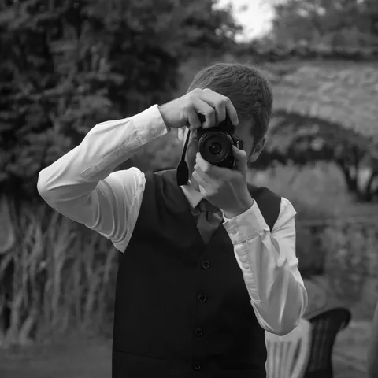

Thomas Soleil
Photographe événementiel & sportif
Toulouse & Castres
Le portfolio
Au plus près de l’instant.
Des terrains de rugby aux scènes de concert, des célébrations aux escapades : découvrez mes reportages.
Rugby

Mariage
Concerts


Argentique

Autres regards

Derrière l’objectif
Un regard qui vient du terrain.
Je photographie ce qui bouge : rugby, mariages, concerts. Je chante et je joue au rugby moi-même ; ces deux passions nourrissent ma manière de raconter les moments que je photographie.
Entre Toulouse et Castres, je travaille en numérique et en argentique, selon le projet.
Faire connaissance →Un échange direct
Une réponse personnalisée sous 24 h pour parler de votre projet.
Numérique & argentique
Le format se choisit ensemble, selon les images que vous souhaitez.
Des photos à partager
Une livraison en haute définition, avec les modalités précisées dans votre devis.